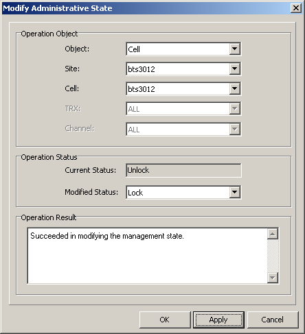

This describes how to modify the administrative state of the cell, TRX, and channel through the LMT. The BSC reset does not affect the attributes of the administrative state.
Prerequisites
- The LMT runs normally.
- The communication between the LMT and the BSC is normal.
- The communication between the BSC and the BTS is normal.
Context
The administrative state consists of Locked, Unlocked, and Shut down. The state of a lower-level object can be modified only when its upper-level object is in Unlocked state.
Procedure
- Through GUI
- Choose .
- Set parameters in the Operation Object and the Operation Status areas, and then click Apply. The results are displayed, as shown in Figure 1.
Figure 1 Modifying administrative state
- Through MML
- Run the SET BTSOBJ command on the Local Maintenance Terminal to modify the BTS administrative state.
Copyright © Huawei Technologies Co., Ltd.